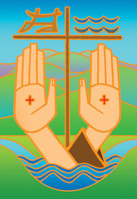

A
Meditation on the Franciscan Coat of Arms
by Friar
Jack Wintz, O.F.M.

If you go to any of our Franciscan friaries, churches or convents, you
will almost always find the Franciscan Coat of Arms, painted
somewhere, hanging on a wall or visible over a doorway. This holds true
around the world as well as through the centuries.
The Franciscan coat of arms often consists of a cross with two arms
crossing each other and nailed to a cross—or at least with a cross in
the background. One arm is that of Christ; the other is that of St.
Francis of Assisi. This image is a key identification badge for those
who consider themselves followers of St. Francis.
This Franciscan coat of arms is an image worthy of our contemplation.
The image is a true expression of both Jesus' and Francis' fervent
style of love. We see in Jesus' crucified hand, first of all, God's
incredible overflowing love for us. In Francis' wounded hand, in turn,
we see the incredibly loving response of St. Francis to the burning
love of God, who first loved us.
This is indeed something to ponder. All in all, the Franciscan coat of
arms is a wonderful expression of the Franciscan (or Seraphic) style of
love. Though few of us live up to this ideal, it calls us to something
rare and splendid!
Prayer
Lord Jesus, you said, "No one has greater love than this: to lay down
one's life for one's friends." Help us to contemplate the amazing
intensity of your love, as symbolized by your crucified hand. Help us
also to imitate you more fully, who first loved us, and to imitate St.
Francis, who responded so fervently to the love so lavishly pour out
upon him. Amen.
Updated: July 31, 2018